×Una red de practicantes que aprende, comparte y construye con IA en Buenos Aires.
Dos anfitriones, tres aliados y una comunidad que aporta sede, herramientas y mentoreo.
Siete bloques cortos: charla, workshop, caso práctico y un challenge final con mentoreo.
Founder de We Make It Lab y partner oficial de Anthropic. Abre el evento con una mirada introductoria a Claude y al stack de la compañía.
Co-founder, Tech & Ops en Lideki. Founder de Sin Jr No Hay Sr (+165K). Lleva el corazón del workshop con demo en vivo de Claude + Obsidian.
Arquitecto de Ciberseguridad en Personal. Comparte cómo aplica Claude + Obsidian en su flujo diario de trabajo y aprendizaje.
CTO de Galo. Lidera el diseño del desafío y el mentoreo en vivo. Cuenta el contexto del problema y las reglas de juego antes del trabajo en sala.
Reglas, criterios y entrega del challenge final junto a Galo. Aplicá lo trabajado durante el workshop a un caso real, en formato individual o por equipo.
[ Por desarrollar ] · Descripción breve del problema y del resultado esperado.
[ Por desarrollar ] · Formato, plataforma de entrega y horario límite del mismo día.
[ Por desarrollar ] · Qué se evalúa: claridad, uso de Claude + Obsidian, originalidad.
[ Por desarrollar ] · Detalle de premios y sorteo de cuentas de Claude.
[ Por desarrollar ] · Cómo y cuándo consultar a los mentores durante y después del evento.